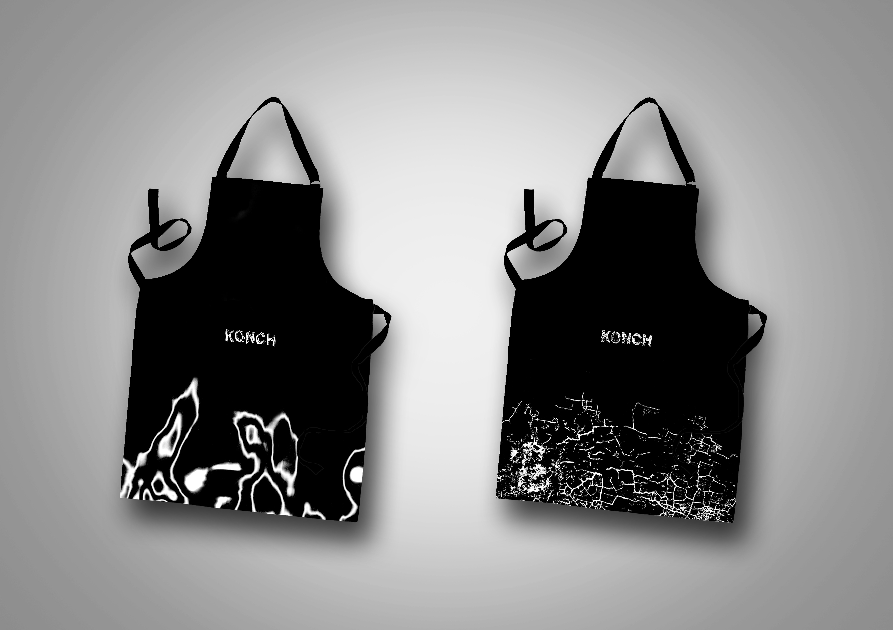

Konch Brand Identity
Brand identity and collaterals for a concept restaurant called Konch, as part of the “Home Grown” brief. At Konch, each dish is based on a texture with no ingredients listed (only allergies). The identity reflects this unique focus, comprising of four different graphic representations of texture.


